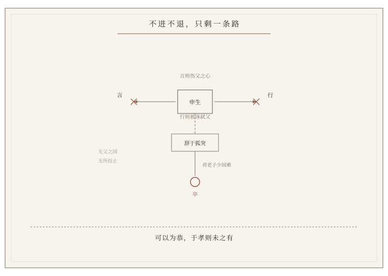

檀弓上 · 三·十四 · 第 217 课
晋献公信骊姬之谮，将杀世子申生。重耳劝其言志、劝其行，申生皆以为不可；使人辞于狐突，托以「伯氏苟出而图吾君」，再拜稽首而死。注「言行如此，可以为恭，于孝则未之有」。
说什么事：一个有父之国，进去不了，也走不出去。
落在哪一层：礼，兼及礼意与人伦之难。论孝之边界。
为何编在此位：上节论丧礼之同异，此节转论人子处父之难。檀弓上自此数节，皆以事见义。
【经】晉獻公將殺其世子申生。公子重耳謂之曰：「子蓋言子之志於公乎！」世子曰：「不可。君安驪姬，是我傷公之心也。」曰：「然則蓋行乎？」世子曰：「不可。君謂我欲弒君也。天下豈有無父之國哉！吾何行如之？」使人辭於狐突曰：「申生有罪，不念伯氏之言也，以至於死，申生不敢愛其死。雖然，吾君老矣，子少，國家多難，伯氏不出而圖吾君，伯氏苟出而圖吾君，申生受賜而死。」再拜稽首，乃卒。是以為恭世子也。
【注】信驪姬之譖。蓋皆當為盍，盍，何不也；志，意也；重耳欲使言見譖之意。重耳，申生異母弟，後立為文公。言其意則驪姬必誅；驪姬，獻公伐驪戎所獲女也；申生之母蚤卒，驪姬嬖焉。行猶去也。言人有父，則皆惡欲弒父者。辭猶告也；狐突，申生之傅，舅犯之父也；前此者，獻公使申生伐東山皋落氏，狐突謂申生欲使之行，今言此者，謝之；伯氏，狐突別氏。子，驪姬之子奚齊。圖猶謀也。則猶惠也。既告狐突，乃雉經。言行如此，可以為恭，於孝則未之有。
【疏】此一节论献公杀申生之事。注「信骊姬之谮」：案僖四年《左传》「姬谓大子曰：君梦齐姜，必速祭之。大子祭于曲沃，归胙于公。公田，姬置诸宫，六日，毒而献之。公祭之地，地坟。与犬，犬毙。与小臣，小臣亦毙。姬泣曰：贼由大子」；又《晋语》「姬寘鸩于酒，置堇于肉」，堇谓乌头。注「盖皆至文公」：此云「盖言子志」及下「盖行乎」，以盖非一，故云「皆当为盍」；《左传》云「或谓太子曰：子辞，君必辨焉」，杜预云「以六日之状自理」，谓毒酒经宿辄败，若申生初则置罪，经六日，其酒必坏，何以经六日其酒尚好，明临至加药焉。注「言其至嬖焉」：僖四年《左传》「大子曰：君非姬氏，居不安、食不饱，君老矣，吾又不乐」，谓我若自理，骊姬必诛，姬死之后，公无复欢乐，故此云「是我伤公之心」。注「前此至别氏」：闵二年献公使申生伐东山皋落氏，狐突欲令申生行云「虽欲勉之，狄可尽乎」；皋落氏在晋都之东，居在山内，杜预云「是赤狄别种」；「伯氏，狐突别氏」者，狐是总氏，伯仲者是兄弟之字，字伯者谓之伯氏。注「既告至雉经」：雉，牛鼻绳也，申生以牛绳自缢而死也，故郑注《封人》云「缘，著牛鼻绳，所以牵牛者也，今时人谓之雉」。注「言行至之有」：《春秋左传》云「晋侯杀其世子申生」，父不义也；孝子不陷亲于不义，而申生不能自理，遂陷父有杀子之恶；虽心存孝，而于理终非，故不曰孝，但谥为恭，以其顺于父事而已，《谥法》曰「敬顺事上曰恭」。
盖 注「皆当为盍」。何不。
言子之志 把被谮之情说白。
安 安于，宠信。注「君安骊姬」。
行 注「行犹去也」。出奔。
雉经 注「雉，牛鼻绳也」。以绳自缢。
恭世子 谥为恭。注「可以为恭，于孝则未之有」。
晋献公将杀世子申生。重耳对申生说：「你何不把心意对君父说明？」申生说：「不可。君父安于骊姬，我一说，骊姬必诛，那是我伤君父之心。」重耳说：「那么何不出走？」申生说：「不可。君父会说我欲弑君。天下哪里有不要父亲的国家？我能走到哪里去？」于是派人辞告狐突：「申生有罪，没听伯氏之言，以至于死；申生不敢惜死。只是君父老了，奚齐还小，国家多难，伯氏不肯出来为君父谋国——伯氏若能出来为君父谋国，申生受赐而死。」再拜稽首，便死了。因此谥为恭世子。
此节三段问答，一步比一步窄。重耳劝「言」，申生说言则伤父之心；劝「行」，申生说行则被诬为弑父，而无父之国不可投。言不可、行不可，于是只剩一死。末段「辞于狐突」，不为自己辩，只为君老、子少、国难三事托人。郑注一句最冷：「可以为恭，于孝则未之有。」——古人给了他「恭」，不给「孝」。
第一层 言则伤父之心 申生的理由不是怕死，是「我若自理，骊姬必诛；姬死，君父居不安、食不饱」。此念极细：他把父之安乐置于己之生死之上。这一层是孝之至处，也是孝之病处。
第二层 天下岂有无父之国 申生不走，理由不是无处可去，是无处可为「有父」之人。礼以父为天，去父之国，即失所以为人之本。此一句，是周代伦理最硬的一块石头。
第三层 不陷亲于不义 郑注「孝子不陷亲于不义，而申生不能自理，遂陷父有杀子之恶」。这是全节最重的一句断语：申生的沉默，使父亲背上了杀子的恶名。所以「心存孝而于理终非」。古人对孝的理解，不是一味顺从，而是不许亲陷于不义——必要时须争。
第四层 谥曰恭 《谥法》「敬顺事上曰恭」。给了「恭」，不给「孝」，一字之差，是史笔的分寸：承认他顺，不承认他对。
与今日何干 凡遇不可两全之处，最易把「忍」当作「对」。此节给一把尺：忍而使人（尤其使上位者）犯下不义，那忍便不是德。
| 左 | 右 |
|---|---|
| 献公信骊姬之谮 | 将杀世子 |
| 子盖言子之志 | 何不把被谮之情说白 |
| 君安骊姬，是我伤公之心 | 言则骊姬必诛，父将不安 |
| 然则盖行乎 | 何不出奔 |
| 天下岂有无父之国 | 行则被诬弑父，无处可投 |
| 辞于狐突 | 不辩己冤，只托君老子少国难 |
| 再拜稽首乃卒 | 雉经而死 |
| 谥为恭世子 | 可以为恭，于孝则未之有 |
画一座宗庙之外的庭，视点略俯，天色压暗。画面中央一位年轻世子（玄端、束发、无佩），独自跪坐在庭中，面前地面平展，无案无器。他身后偏左站着一位年长的同母异父之弟（衣色稍浅、侧身向内、一手微抬作劝状），再远处一名侍从低头退在廊柱旁。庭右一门，门内深处一片黑。庭左侧的地面上放着一束未系的牛绳（细而盘绕），靠近世子右膝。不写文字、不画兵刃。赭色只用在门槛的一道横木与那束牛绳上。
